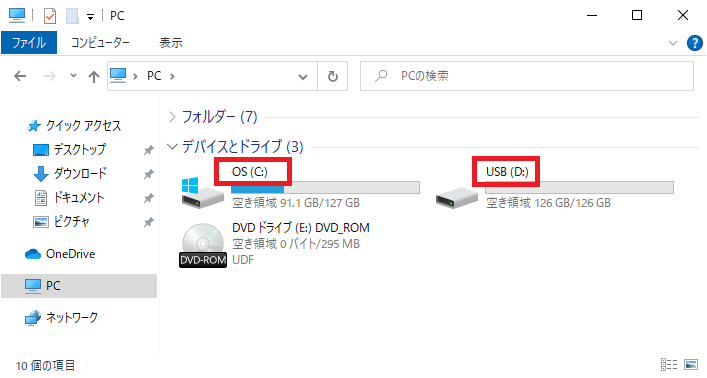
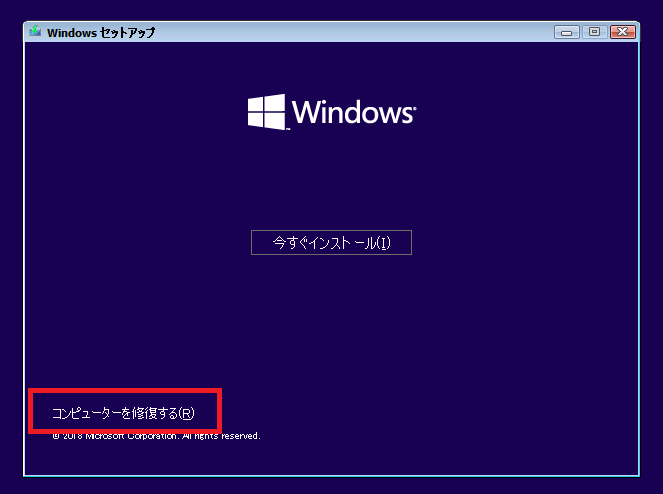
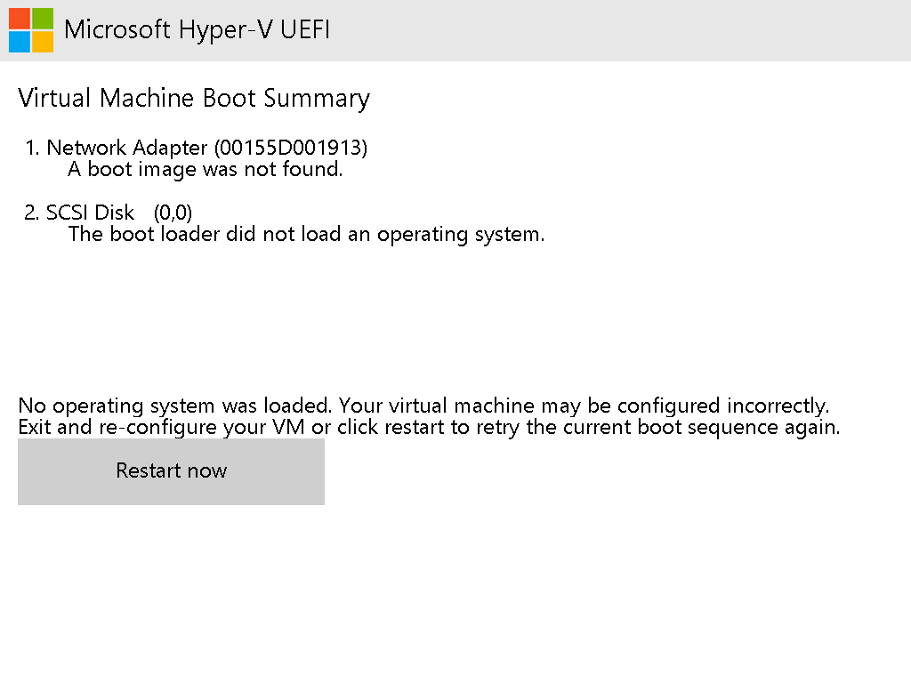

本記事はマイクロソフト社員によって公開されております。
いつも弊社製品をご利用いただきまして誠にありがとうございます。Windows プラットフォーム サポートの栗木です。
今回は、Disk2vhd ツール を利用し、物理環境の物理ディスクから Hyper-V で使用できる仮想ディスクを作成する P2V 化についてご紹介いたします。仮想環境で実行することにより、ハードウェア要因の問題を切り分けられたり、問題を引き起こしている可能性のあるソフトウェアのアンインストールが容易になり、問題解決がスムーズに達成できる可能性がございます。
Disk2vhd ツールは VSS に対応しているため、OS を起動させた状態で実行可能ではございますが、VSS に対応していないアプリケーションや実行時の負荷などを考慮すると、Windows PE/RE (プレインストール環境/回復環境)で実施いただいたほうが安全ため、本記事では Windows PE/RE での P2V 化の手順をご紹介いたします。
Windows プレインストール環境 (Windows PE)
https://docs.microsoft.com/ja-jp/windows-hardware/manufacture/desktop/winpe-intro
Windows 回復環境 (Windows RE)
https://docs.microsoft.com/ja-jp/windows-hardware/manufacture/desktop/windows-recovery-environment--windows-re--technical-reference
注意点:
本記事は検証目的として Disk2vhd による P2V 化手順をご案内しております。Disk2vhd ツールは Windows 標準ツールではございませんのでサポート内容については使用許諾をご確認いただきご理解いただいた上でご利用ください。
Windows PE/RE で起動すると、ドライブ レターが通常の OS 起動時と異なる可能性がございます。そのため、ラベル名を変更し、ラベル名から判別できるようにします。すでに OS が通常起動できないエラー状態にある場合は、こちらの手順はできませんので、スキップしてください。

以下の Web サイトから Disk2vhd ツールをダウンロードし、USB メモリ等の外部ストレージに展開します。
Disk2vhd：https://docs.microsoft.com/en-us/sysinternals/downloads/disk2vhd
P2V 化したいシステムに Windows RE がインストールされている場合(A)や Windows OS のインストール メディアがある場合(B)は、以下の方法で、Windows RE を起動できます。そのため、Windows PE (WinPE) メディアの作成をする必要ありませんのでこちらの手順はスキップできます。
A. コマンドプロンプト（管理者権限）から Windows RE を起動
1 | reagentc /boottore && shutdown /r /t 0 /f |
B. インストール メディアから コンピューターを修復する を選択し、Windows RE を起動

上記の方法で、Windows RE を起動できない場合は、次の手順より、Windows PE (WinPE) メディアを作成してください。
作業用の Windows 10/11 環境にて Windows ADK をインストール
Windows ADK のダウンロードとインストール
https://docs.microsoft.com/ja-jp/windows-hardware/get-started/adk-install
以下の Web サイトを参考に WinPE のブートメディアを作成
起動可能な Windows PE メディアの作成
https://docs.microsoft.com/ja-jp/windows-hardware/manufacture/desktop/winpe-create-usb-bootable-drive
Windows PE/RE で、コマンド プロンプトを実行
Windows PE は、自動的にコマンド プロンプトが起動し、wpeinit の自動実行が完了するとプロンプトが戻ります。プロンプトが戻るまで、5～10 分程かかる場合がございます。
Windows RE では、トラブルシューティング -> コマンド プロンプトを選択することにより、コマンドプロンプトを実行できます。
Disk2vhd ツールを実行し、設定を変更
※実行時には使用許諾が表示されますので、同意 (Agree) していただいた上でご利用ください。
・ “Use Volume Shadow Copy” のチェックを外します。
・ “VHD File name” にvhdx の保存先とファイル名を指定します。
・ 仮想ディスクに変換したいボリュームにチェックをつけます。
名前が、\\?\Volume から始まるボリュームがある場合は、必ずチェックをお願いします。上述いたしましたが、OS を通常起動した場合とドライブ レターが異なる場合がありますので Label を参考に必要なボリュームを選択してください。例えば、システム ディスクである C ドライブが D ドライブにアサインされていることがあります。
出力先にネットワークドライブを指定したい場合は、後述の ネットワークドライブにドライブレターを割り当てる方法 を参考に IP アドレスの設定とファイルサーバーへの接続を先に実行してください。
Create をクリックして、仮想ディスクを作成
選択したボリュームが複数の物理ディスクにある場合は、複数の仮想ディスクが連番のファイル名で作成されます。
正常に完了しましたら、Close をクリックし、ツールを終了させ、コマンド プロンプトで wpeutil shutdown を実行してシステムをシャットダウンします。
Disk2vhd ツールは、BIOS 環境用に作られているため、もともとの物理端末が BIOS 環境であれば、次の PowerShell コマンドにより、Disk2vhd で作成した仮想ディスクを指定し、Hyper-V 仮想マシンを作成・起動することができます。メモリのサイズやプロセッサーの数は、ご希望の値に変更してください。
1 | New-VM -Name "TestVM" -MemoryStartupBytes 4GB -Generation 1 -VHDPath "D:\path\to\vhd\test.vhdx" |
New-VM: https://docs.microsoft.com/en-us/powershell/module/hyper-v/new-vm
Set-VM: https://docs.microsoft.com/en-us/powershell/module/hyper-v/set-vm
Start-VM: https://docs.microsoft.com/ja-jp/powershell/module/hyper-v/start-vm
UEFI 環境の場合は、そのままの状態では OS の起動ができないことがございます。その場合には、Hyper-V 仮想マシンを作成した後に、OS が起動できるようにシステム パーティションの初期化処理を Windows PE/RE で実施する必要があります。
Hyper-V 仮想マシンを作成
第 2 世代の仮想マシンとして、Disk2vhd で作成した仮想ディスクを指定して、Hyper-V 仮想マシンを作成・起動します。
1 | New-VM -Name "TestVM" -MemoryStartupBytes 4GB -Generation 2 -VHDPath "D:\path\to\vhd\test.vhdx" |
仮想マシン起動後に、以下のような画面が表示されている場合は、システム パーティションの初期化が必要なので、次の手順に進んでください。
Windows PE/RE で起動
Windows OS のインストール メディア の ISO ファイル、または Windows PE の ISO ファイルを仮想マシンのディスク ドライブに追加し、起動します。ISO ファイルがない場合は、上述したWindows PE (WinPE) メディアの作成 へ戻り、ISO ファイルを作成してください。
1 | Add-VMDvdDrive -VMName "TestVM" -Path "D:\path\to\InstallMedia\or\WinPE\disk.iso" |
仮想マシン起動時に “Press any key to boot from CD or DVD” のメッセージが表示されるので、任意のキー入力してください。
コマンド プロンプトから diskpart ツールを起動
Windows PE メディアから起動した場合は、自動的にコマンド プロンプトが起動します。Windows OS のインストール メディアから起動した場合は、Shift+F10 キーを入力するとコマンド プロンプトを起動できます。
コマンド プロンプトが起動したら、diskpart を実行してください。
diskpart ツールでシステム パーティションの初期化
まず、list disk コマンドで現在のディスクを確認し、sel disk (ディスク番号) を実行し、ディスクを選択します。
1 | DISKPART> list disk |
次に list part コマンドでシステム パーティションを確認し、sel part (パーティション番号) コマンドを実行し、システム パーティションを選択します。
1 | DISKPART> list part |
format quick fs=fat32 label="System" コマンドを実行して、パーティションをフォーマットします。
1 | DISKPART> format quick fs=fat32 label="System" |
assign コマンドでフォーマットしたボリュームにドライブレターを割り当て、list vol コマンドを実行して、システム ボリュームのドライブ レターを確認します。この例では、E ドライブと確認できます。
1 | DISKPART> assign |
exit コマンドで diskpart ツールを終了します。
1 | DISKPART> exit |
ブート ファイルの作成
コマンド プロンプトで bcdboot (Windows のドライブレター)\Windows /s (システム パーティションのドライブ レター): でブート ファイルを作成します。
1 | X:\windows\system32>bcdboot c:\Windows /s e: |
これで作業は完了したので、wpeutil shutdown コマンドを実行してシステムをシャットダウンします。
ISO イメージをアンマウントし、Hyper-V 仮想マシンが起動できるか確認してください。
ネットワークドライブに保存するためには、IP アドレスの設定を行った上で、接続を行います。ただし、システムに搭載されているネットワークインターフェースカード (NIC) が WinPE に含まれている標準ドライバーで認識できる必要がございます。認識されない場合は、個別にハードウェアベンダー様より提供されているドライバーを適用した状態で Windows PE メディアを作成してください。
コマンドプロンプトにて netsh コマンドを利用して IP アドレスを設定
netsh int ipv4 show int ※ 対象のネットワークアダプターの Idx の番号を確認します。
netsh int ipv4 set address “Idx の番号” static “IP アドレス” “サブネットマスク” “ゲートウェイ” “メトリック(省略可)”
Net コマンドにてファイルサーバーに接続
net use “ドライブ文字:” “共有パス” /user:”接続するアカウント” “パスワード”
本情報の内容（添付文書、リンク先などを含む）は、作成日時点でのものであり、予告なく変更される場合があります。